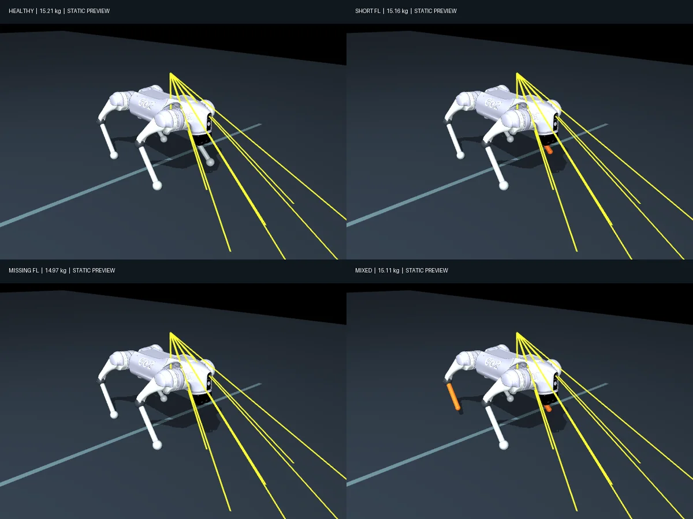
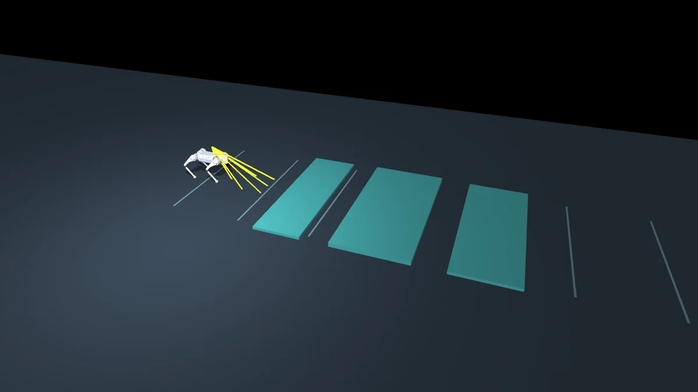
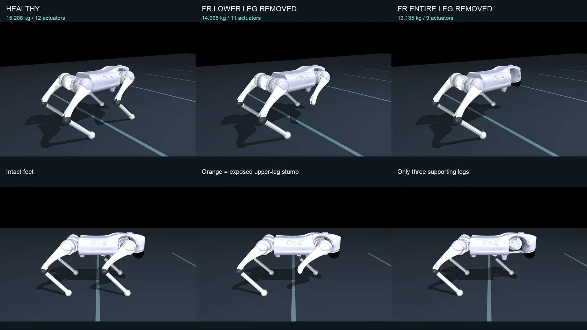
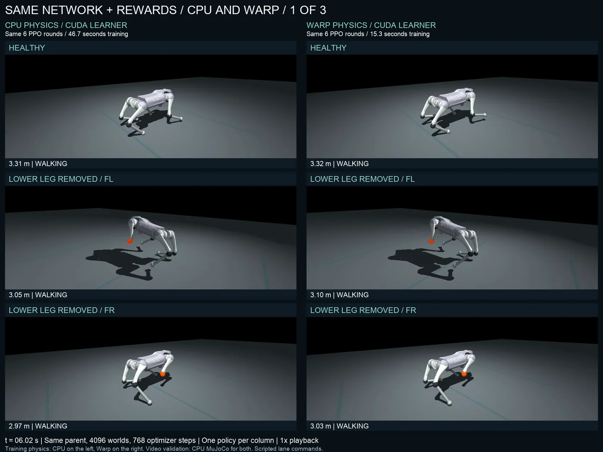
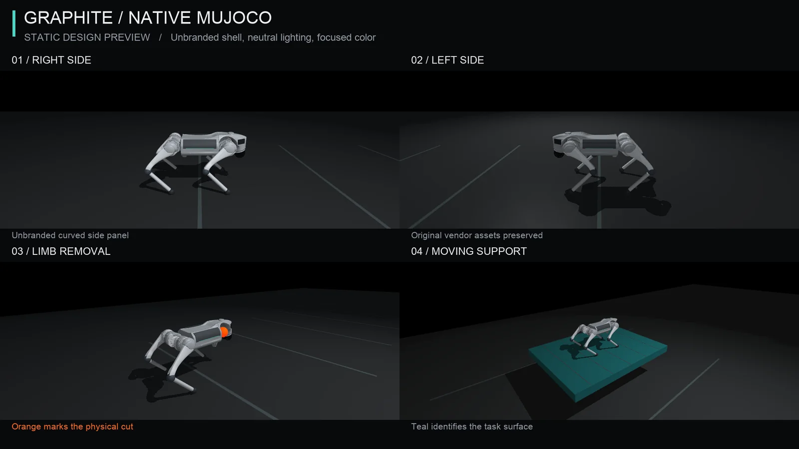

1 · Minutes, not hours
September 10 · the brief, the body, and the first pilot
The goal was one learned controller for a four-legged robot whose body has changed: a shortened or missing leg, a weak motor, or both. The user wanted a general controller that adapts whatever the state of the dog's legs, and set a hard limit on how it could be trained: "anything longer than a few minutes is not acceptable". Training time became an acceptance gate, starting at five minutes per final policy with every ancestor stage counted. The user later allowed more when a learning curve justified it.
The robot is the Unitree Go2 model from MuJoCo Menagerie. It is a free body, moved only by its own torque-limited joints and real ground contact. Damage is physical: removing a calf deletes its body, mass, collision geometry and joint. Before anything moved, we rendered the bodies and the course as static scenes and checked them.
The body (simulated)
- Unitree Go2, 15.206 kg when healthy
- 12 position servos, Kp 20 N·m/rad; torque caps 23.7 N·m at hip and thigh, 45.43 N·m at the calf
- 2 ms
implicitfastphysics; trunk, leg and stump contacts all enabled
The policy (learned)
- PPO actor 86 → 128 → 128 → 12 with ELU, 29,196 parameters; the same shape in every release
- Reads joint angles and velocities, gyro, gravity direction, its previous action, the velocity command, 12 missing-joint bits and 9 range rays: it is told about damage, not left to diagnose it
- Writes 12 joint-position offsets at 50 Hz; no gait clock, foot trajectory or added propulsive force
Training and scripting
- 512 CPU MuJoCo worlds through mjbatch; network updates on the Mac's Apple GPU
- A critic (90 → 128 → 128 → 1) also sees exact body velocity, height and damage, during training only
- Scripted: a lane follower with ideal localization sends velocity commands; cameras are observers


First traction
The first pilot trained on shortened calves, weakened motors and low steps. Its selected reactive policy had 329.05 s of training in total, including a 59.81 s pretraining stage. The whole pilot, environment included, reached its validated checkpoint 51 min 45 s after the first implementation timestamp. At equal wall time we compared it with a history variant that adds a learned estimator over the last 0.5 s of feedback. The cases were frozen before the comparison, with 32 starting conditions each.
| Frozen case, 32 trials each | Reactive, 329.05 s | History, 329.35 s |
|---|---|---|
| Healthy | 32/32 | 32/32 |
| Unseen front-right calf at 62% length | 32/32 | 32/32 |
| Two left calves at 78% and 86% | 32/32 | 32/32 |
| Short rear-right calf, rear-left hip dropping to 35% torque | 32/32 | 32/32 |
| New 3.5/5/4.5 cm steps with two shortened calves | 32/32 | 0/32 |
| Rear-right calf and its joint removed | 0/32 | 0/32 |
Completion means reaching 5 m within 12 s and staying controlled in the goal lane for a second. These scores measure progress. The stricter support test of chapter 2 came later and was not applied to them. The comparison is an engineering test at equal wall time, not a clean ablation of memory: the simpler actor collected more transitions.
2 · The dog was walking on its knee
September 10 · 15:02 UTC · the user saw what the checks missed
A healthy-only walker had passed our checks: four feet touched the ground and the trunk did not. Watching its video, the user wrote: "the healthy dog is walking, his back right leg on the elbow, instead of foot/paw". The measurement agreed. The rear-right knee housing was resting on the ground in 155 of 600 sampled frames. Scored with a force-based test, the policy still reached 5 m in 32 of 32 trials and walked validly in none.
The fix measures what carries the weight. Every robot collision geometry got a native MuJoCo contact-force sensor against the ground, and the allowed supports follow the actual body.
| Physical leg | Allowed ground support |
|---|---|
| Intact calf and foot | The foot |
| Shortened calf | Its modelled end surface |
| Calf and its joint removed | A designated stump at the thigh tip |
| Weak motor, unchanged leg | The same foot as before |
Knees, shafts, thighs, hips and the chassis are penalized in the reward (weight 2), and evaluation fails a trial if any of them carries more than 1 N at any 2 ms physics step. The policy's inputs did not change: the sensors feed only the reward and the validator. No gait, foot path or posture was added.
3 · From shortened calves to missing legs
September 10–11 · even out the gait, then remove whole limbs
Short rounds followed, each one measured before the next. Two gait-balance terms adapted from Isaac Lab's Spot task evened out the healthy gait: 61% less stance-timing imbalance and 64/64 support-valid trials, after 403 s of training in total. A paired-damage stage then took four bodies with two shortened calves from 33/128 to 127/128 support-valid completions with 89.4 s more training.
Then the user approved dropping shortened legs to focus on complete removals: the entire calf and foot, or the entire hip, thigh and calf. A lower-leg removal leaves a modelled 15 mm stump at the thigh tip as an allowed support. A whole-leg removal leaves three feet and nothing else.

| Condition, 32 fresh starts each | Healthy parent | Selected policy |
|---|---|---|
| Healthy | 32/32 | 32/32 |
| Lower leg removed: FL, FR, RL, RR, each | 0/32 | 32/32 |
| Entire leg removed: FL, RL, RR, each | 0/32 | 32/32 |
| Entire leg removed: FR | 0/32 | 30/32 |
| All eight removals | 0/256 | 254/256 |
Five runs used 597.2 s (9 min 57 s) of new training on the Mac. The selected policy's full ancestry is 764.7 s, including its healthy parent. All 288 trials survived on allowed supports. The two front-right misses crossed 5 m too late to hold the goal lane for a full second, so they count as failures.
4 · v1: one policy, nine bodies
September 11 · the gait the user accepted · tag adaptive-dog-v1
The last rounds were steered by watching. Smoothness rewards cut abrupt command changes by 32% and roll and pitch rates by 54% (RMS, averaged over the eight removals), and a minimum-support term cut time in the air by 41%. The user then rejected a gait that passed its numbers because all its feet still appeared to drag. A visible-step reward made every intact foot lift, with mean swing peaks of 5.5–10.8 cm and 288/288 completions. With a front-right leg missing, the rear legs swung almost together, 6.5% and 10.6% of a cycle apart, against 58.7% and 58.2% in the front-left cases. A small rear-overlap cost, trained for 2 min 59 s, reduced that. The user called the result organic and realistic and asked for it to become the official release.
5 · Moving the physics onto the GPU
September 11 · same network and rewards, MuJoCo Warp on an RTX 4090
v1's physics ran on the CPU, so a GPU could speed up only the network updates. MuJoCo Warp runs the batched rigid-body and contact physics on the GPU, with one CUDA stream for each of the nine physically different body batches. Observations and rewards are still computed in NumPy on the CPU. Before any new training we fixed the rules: the same actor, critic, rewards, bodies, contacts, torque limits and clocks; minibatches independent of the number of worlds; paired runs with equal experience and optimizer steps; final checkpoints evaluated on CPU physics.
| 4,096 worlds, same updates | CPU training | Warp training | Speedup | CPU tasks | Warp tasks |
|---|---|---|---|---|---|
| Seed 2 | 46.740 s | 15.286 s | 3.06× | 67/72 | 70/72 |
| Seed 3 | 45.269 s | 13.542 s | 3.34× | 65/72 | 71/72 |
| Seed 4 | 44.763 s | 13.493 s | 3.32× | 68/72 | 64/72 |
| Pooled | 136.772 s | 42.321 s | 3.23× | 200/216 | 205/216 |
With 4,096 worlds and the same number of updates, the two backends fell within the declared margins. Throughput rose from 12,937 to 41,811 transitions per second, and all 432 trials stayed upright on allowed supports. This continues a pretrained walker; it is not learning to walk in 42 seconds.

6 · Learning to stand still
September 11–12 · walk, stop and balance on pads, slopes, gaps and steps · tag adaptive-standing-v1
Standing was a skill v1 lacked: frozen, it passed 0 of 18 gentle standing checks. A zero velocity command now means hold position. Inputs that had been reserved now carry four foot-contact bits, four downward ray distances, and ideal body velocity and hold-position error; they are zeroed while walking. The user extended the terrain to 19 surfaces: pads, slopes of 6° to 24° on both axes, steps up to 28 cm, and a missing support under one foot. A frozen walker and recorded walking examples kept the gait from being overwritten during training; neither runs at deployment.
Seven rounds on 4,096 MuJoCo Warp worlds took 536.7 s (8 min 57 s) of new training and 26.8 million transitions. This was fine-tuning v1, not training a dog from scratch in nine minutes: the ancestry totals 40 min 59 s.
Flat holds, flat walk–stand–walk, ordinary pads, 6° and 12° slopes, the 18° side slope, high pads, 12 cm steps and both front missing-support cases pass 4/4 each. On the front gaps the lifted foot stays unsupported for the whole hold.
7 · A deck that moves
September 12 · translate, yaw, heave and rock · tag adaptive-moving-v1
The deck is a 1.6 × 1.2 × 0.1 m, 35 kg table on six servo joints with force limits of ±3,000 N on the slides and ±1,000 N·m on the rotations. It travels ±0.55 m on both horizontal axes, ±0.20 m vertically, ±1.4 rad in yaw and ±0.45 rad in pitch and roll. The dog stays a free body and is never repositioned during a run. "Hold still" now refers to the deck: position, height and velocity are measured in its frame, while tilt is still measured against gravity, so a rocking deck does not tell the dog to tip with it. The policy reads ideal platform state from the simulator and never sees the future motion command.
Three variants separate coordinates from learning: the frozen standing policy, the same weights with deck-relative inputs, and newly trained weights. Two rounds took 118.6 s of new GPU training, with half the worlds on moving decks and half rehearsing static tasks on all nine bodies.
8 · The whole curriculum from random weights, timed
September 12 · 05:14 UTC · one RTX 4090, 4,096 worlds throughout
A summary had shown walking learned in "42 seconds". That number added up three benchmarks that continued an already trained walker; it never measured learning to walk. The user asked to "run it for real and really time it". We replayed the recorded curriculum from random weights: 30 stages (21 walking, 7 standing, 2 moving), one evolving actor, 4,096 worlds in every stage, and every training reference rebuilt from this run's own checkpoints.
| Phase, each continuing the last | Learning time | New experiences | Experiences/s |
|---|---|---|---|
| Healthy walking from random weights | 1 min 54 s | 9.63 M | 84,658 |
| Adapt walking to missing limbs | 9 min 39 s | 29.79 M | 51,463 |
| Standing on static supports | 8 min 23 s | 26.84 M | 53,318 |
| Moving platforms | 2 min 09 s | 5.51 M | 42,643 |
| Complete shared policy | 22 min 05 s | 71.76 M | 54,159 |
That is 398.68 hours of simulated experience summed across worlds, 717.6 million physics steps at 500 Hz, 730 rollouts and 93,440 optimizer steps. The timer covers physics, CPU observations and rewards, transfers, PPO updates and the rehearsal losses. Setup (187.8 s) and the final evaluation (50.1 s, on the Mac) are timed separately.
9 · Native looks, and one generated trial
September 12 · presentation only; no physics or policy changed
The Go2 and Unitree names are part of the robot's mesh, so hiding the white lettering would leave the letter shapes recessed in the shell. The graphite theme instead draws thin curved covers in MuJoCo's observer scene. They follow the measured body and add no mass, collision or support. Tests that run themed and original models for 500 physics steps find every pose, velocity and sensor reading identical. The complete film at the top of this page replays the recorded trajectories in that theme at 1×; an earlier 2× edit is archived, since the user preferred normal speed.
Before that, one short paid trial ($1.98) sent five seconds of the accepted moving-deck film to Seedance 2.5 Video Edit through the WaveSpeed SDK, asking for brushed metal and a studio lab. It returned a metallic robot in a softly lit lab, but the legs, foot contacts and deck pose drifted from the original. The user paused generative styling and asked for better native MuJoCo rendering.

10 · What comes next
Each step is measured with the same gates, seeds and support checks as above